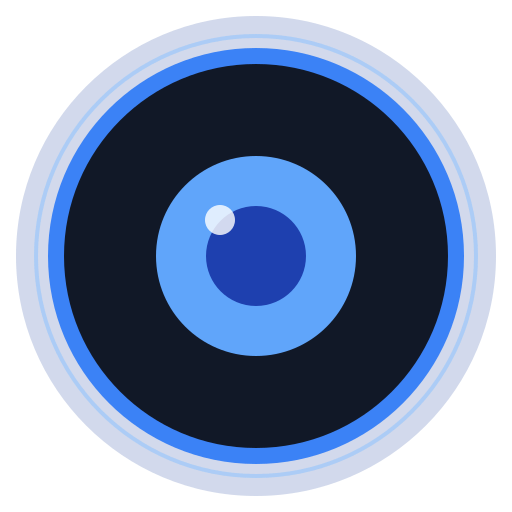

ui/SettingsPage.tsx
300 line UI tweak
Breaks one page.
db/migrations/0042.sql
3 line DB change
Breaks the entire app.
Not all diffs are created equal.
The v4 deck, told as film: hook, then promise, then three problem-to-answer acts (Capability · Control · Cost), a product tour, recap and CTA. Music only, so every frame carries its own words. Dark boxes stand in for the real demo clips.

LiveReview


 → diffs per day
→ diffs per day